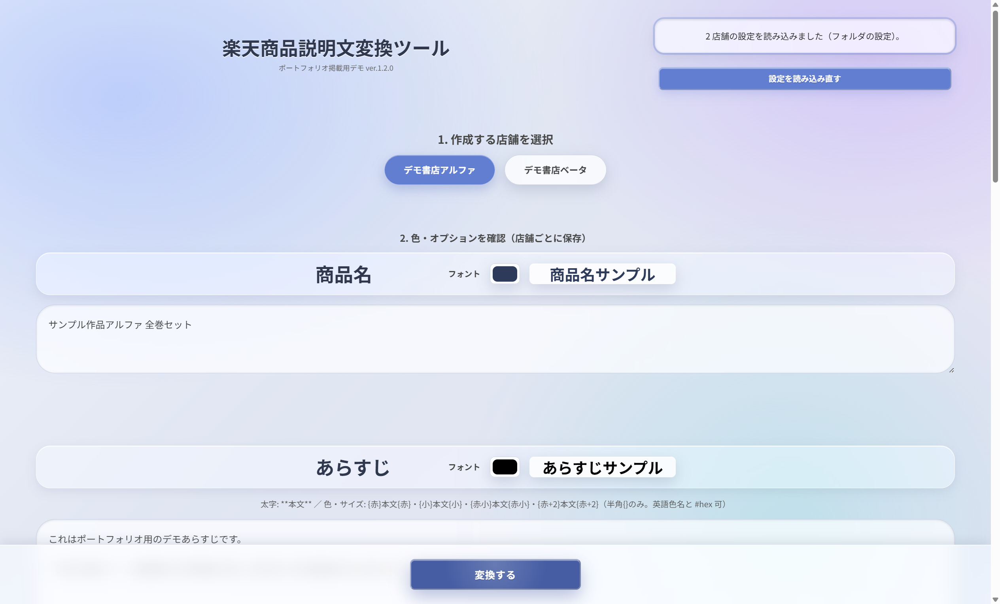
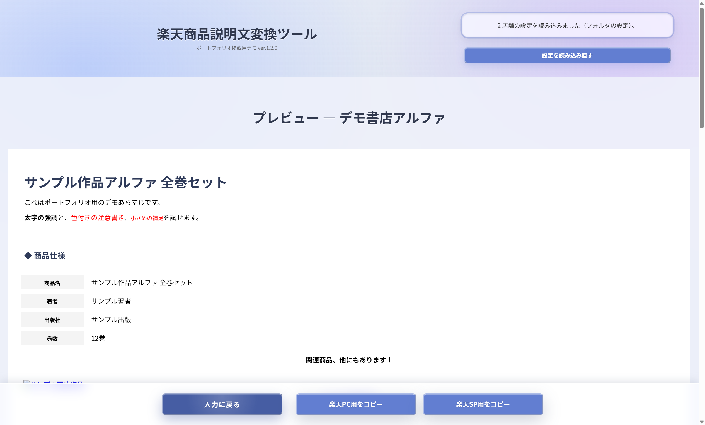
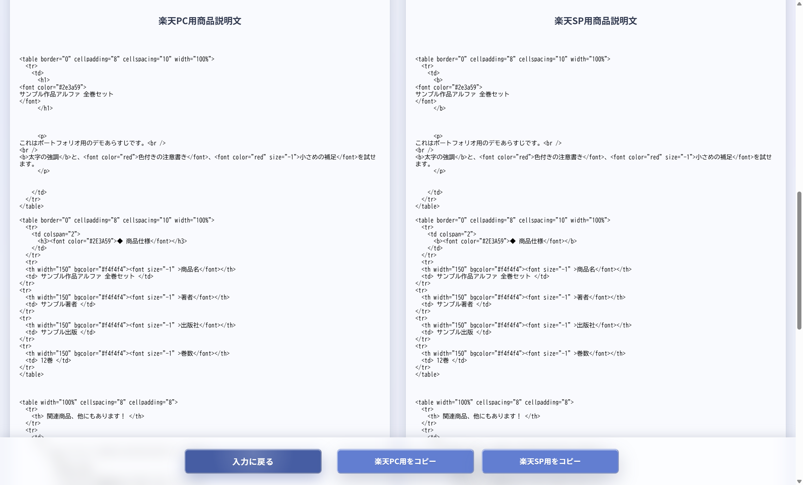

楽天商品説明文変換ツール
楽天市場向けの商品説明 HTML を、店舗ごとのテンプレート・色・挿入リンクに合わせて生成するブラウザツールです。プレーンテキスト（と簡単な記法）から、PC 用・スマートフォン用の説明文を一括で作り、クリップボードへコピーできます。
店舗ごとに表レイアウトや注記が違い、手作業の HTML 編集が負担になりやすい——同じ商品情報を複数店舗向けに作り直すときの表記ゆれや漏れを減らすために作りました。
主な機能
- 複数店舗（店舗ごとに色・オプション・テンプレート）
- 商品名・あらすじ・仕様のテキストから HTML 化
- あらすじの部分装飾（太字、色・サイズなど）
- 関連商品ブロックや定型リンクの差し込み
- プレビュー確認後、楽天 PC／SP 用を用途別にコピー
工夫した点
- 店舗差分を設定ファイルに寄せ、UI は共通のまま運用できる形にした
- あらすじ装飾の入れ子・閉じ忘れなどを検出し、変換を安定化した
- 変換失敗時はプレビューにエラーを出し、前回 HTML の誤表示を防ぐ
画面



技術
- フロントのみ（HTML / CSS / JavaScript）
- 店舗設定は設定ファイルから読み込み
- ビルド: Sass、esbuild
- 変換ロジックはユニットテストで担保
画面はデモ用の架空店舗・架空商品です。動くツール一式の配布はしていません（画面紹介のみ）。楽天公式・提携のサービスではありません。